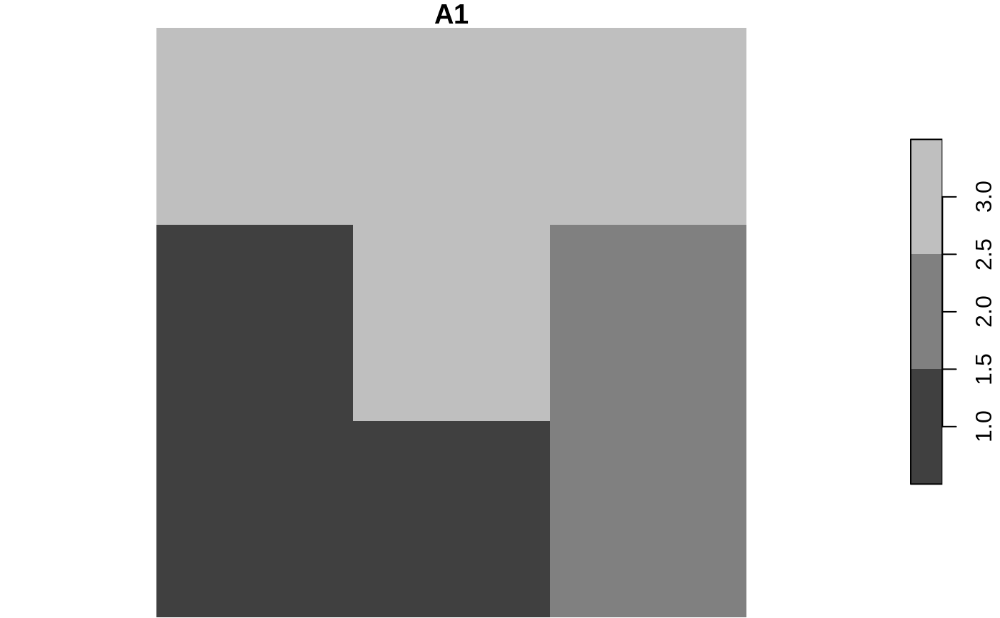

Calculates a distance matrix based on an object of class lsp,
lsp_to_dist(x, dist_fun, unit = "log2", p = NULL)
| x | An object of class |
|---|---|
| dist_fun | A distance/dissimilarity method used. All possible values can be found using
the |
| unit | A character string specifying the logarithm unit that should be used to
compute distances that depend on log computations: |
| p | Power of the Minkowski distance |
An object of class `"dist"``
library(comat) library(stars) data(raster_x, package = "comat") raster_x = st_as_stars(raster_x) plot(raster_x)cov = lsp_thumbprint(raster_x, window_size = 2, type = "cove") dist_cov = lsp_to_dist(cov, dist_fun = "jensen-shannon")#>dist_cov#> v1 v2 v3 #> v2 5 #> v3 5 2 #> v4 4 1 1